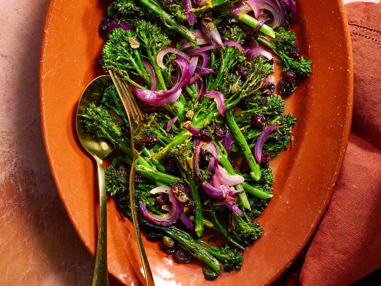

Broccolini grillé aux canneberges et aux câpres
Description
Ce plat grillé vibrant combine du broccolini croustillant, des canneberges sucrées et des câpres savoureuses, le tout mélangé à une vinaigrette orange acidulée. Rapide à préparer, c'est un accompagnement coloré et savoureux qui égaye n'importe quel repas.
Ingrédients
- 1/4 tasse de canneberges séchées
- 1/4 tasse de jus d'orange frais
- 1 livre de broccolini
- 1/2 tasse d'oignon rouge finement tranché
- 2 cuillères à soupe d'huile d'olive
- 1 cuillère à soupe de câpres
- 1/2 cuillère à café de poivre noir fraîchement moulu
- 1/4 cuillère à café de sel
- 1 cuillère à café de zeste d'orange
Instructions
- Placez la grille du four à environ 6 pouces de la source de chaleur ; préchauffez le gril.
- Faire chauffer les canneberges séchées et le jus d'orange au micro-ondes dans un petit bol à puissance élevée jusqu'à ce que les canneberges soient bien dodues, environ 25 secondes. Égoutter et réserver le jus.
- Sur une plaque à pâtisserie à rebords de 10 x 15 pouces recouverte de papier d'aluminium, mélangez les canneberges, le broccolini, l'oignon rouge, l'huile, les câpres, le poivre et le sel ; étalez en une couche uniforme.
- Faites griller en remuant à mi-cuisson jusqu'à ce que le broccolini soit cloqué, environ 10 minutes. Mélangez avec le zeste d'orange et le jus réservé avant de servir.